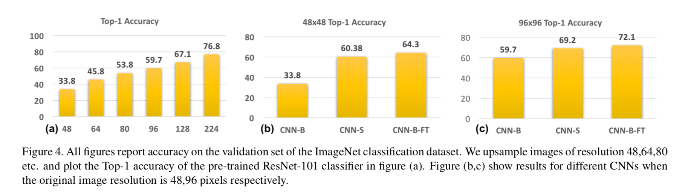

An Analysis of Scale Invariance in Object Detection – SNIP
URL: https://arxiv.org/abs/1711.08189
CVPR2018的一篇Oral，主要在研究scale invariance或者说是domain shift的问题，论文所提出的SNIP方法不同于multi scale的逻辑，可以理解为把网络输入的物体norm到一个相对固定的scale，inference的时候也做同样的策略，这样可以避免训练和测试数据集的scale invariance的问题。
论文在分析scale invariance问题的时候做了几组实验：
- 实验一：训练三个模型CNN-B(224x224作为输入的图)、CNN-S（和CNN-B类似的图片只是针对输入图片的尺寸修改了第一层conv的stride，可以理解为针对输入图的尺寸做的Resolution Specific Classifier）以及CNN-B-FT（224x224输入图预训练模型 + 用低分辨率图片upsample搭配224x224来finetune）。CNN-B在48x48~224x224范围的输入图上效果如下图a，可见效果随分辨率大小逐渐变好，224x224最好。CNN-B-FT的效果也有一定提升。从结果中也可以发现domain shift对模型的影响：
 - 实验二:验证集固定为1400x2000的分辨率
- 分别训练800x1400和1400x2000的检测模型，1400x2000效果最好，但是提升有限，作者认为是因为提升分辨率有助于小物体的检测但是对于大物体的检测是有坏处的
- 训练1400x2000的模型忽略特别大的物体，最后的结果比800x1400的效果更差，因为抛弃了比较多的数据，丢失了variation in appearance and pose
- Multi-Scale Training最后的结果和800x1400的效果差不多。作者认为过程中同样出现了过大和过小的物体。

针对上面实验的结果论文所提出的SNIP方法想法很直接，可以理解为是Image Pyramid的改进。SNIP通过在训练和inference的时候控制物体到一个固定的scale来保证检测的效果。实验一和实验二的结果也支持来这一点。具体实现的时候针对不同scale的输入，论文中都分别定义了一些proposal的面积范围，网络训练的时候只有落在给定范围内的proposal才会回传梯度。这也是SNIP中Scale Normalization的实际含义：
一些实验结果：